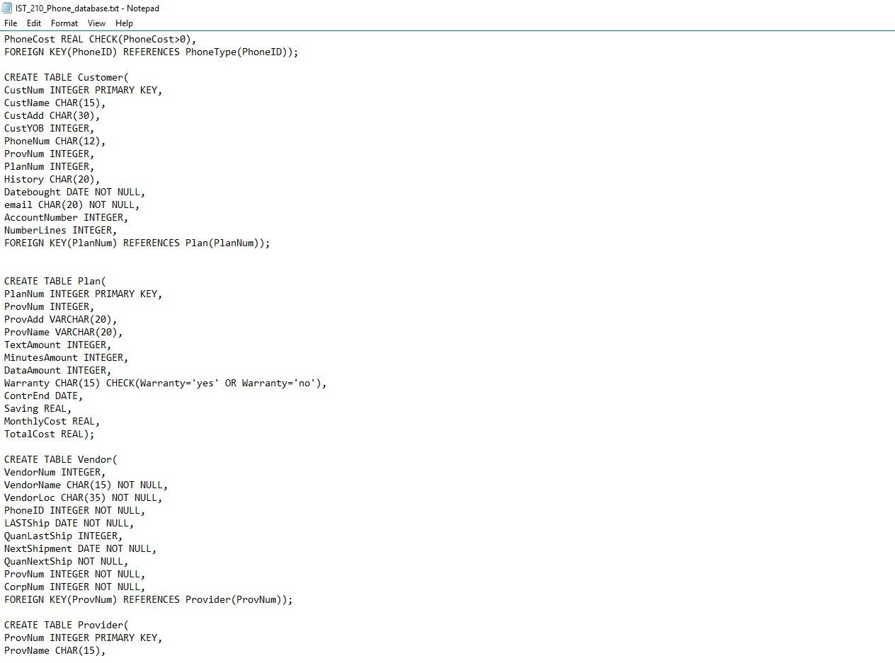
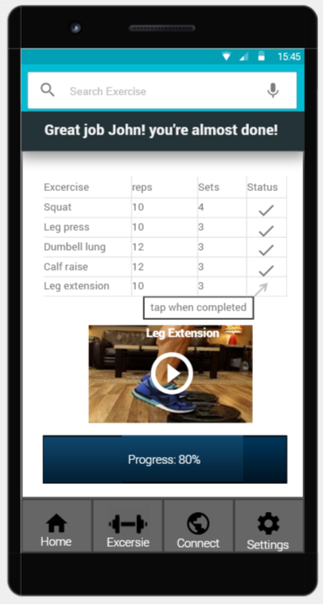
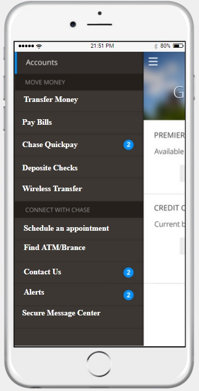

|  | Phone DatabaseThe final project for my database management class is to create a database that includes over 10 tables. Each table had to connect with another with primary keys, foreign keys, etc. My project included over 200 fields, an ER diagram, and a bunch of queries that included select statement, update, delete, and joins. I decided to build a database that revolves around phones since many people have phones and it has become a standard to own for many. I had tables involving types of phone, customers, manufacturers, phone plans, service provider, etc. My database was done in SQL on notepad. |
 |
Penn State DefenseFor this project, I had to team up with two other students and led the team to develop a video game. As the team leader, my biggest challange is to get the members to communicate with each other. The game took most of the semester and was created by using Java and some XML. The game is based off of my idea of combining Pong and Brick Break. Each player has to get the ball into the opponent's score zone by first breaking through the layer of the opponent's brick. The game can be played with two players or a single player against an AI. |
 |
Harry Potter fansiteThis is my final project for my web development class and is the first website I developed. I had to create a website using HTML, CSS, and JavaScript. The theme of my website is Harry Potter because It easily meets the project requirement. The website I developed allow the users to learn about the characters, watch movie trailers, buy books, and take a poll. |
 | Lifting CoachThe goal of this project is to create the most useful and creative prototype that promotes health or fitness. I teamed up with two other students and competed against 15 other teams. Through Interview and surveys on lifters, we were able to brainstorm features. We then developed the prototype using JustInMind. We performed testings and got feedbacks to further improve the app. In the competition, Our team came in third place. |
|  | Appointment function for Chase Mobile AppIn this project, I led three other members to come up with a solution to a client's business problem. For this project, the professor wanted us to find a client in the real world by ourselves and provide them a solution to their business problem. A team member has connections with JP Morgan Chase Bank, which became our client. The representative from JPM gave our team a business problem, regarding the long wait time for customers to talk to a banking representative. The team decided to create a prototype function that allows users to schedule an appointment using the Chase Mobile app. I developed the prototype by using JustInMind. The plan is to have my team handed off the prototype and the deliverable to the JPM team. The JPM team will then pitch their idea to the app developers in hopes of having the function implemented into the Chase Mobile app. |
 |
George's communication concernFor this group project, the team has to come up with ways to further progress communication for George's floral business. While other members of the group were focusing on improving social media platform and ads, I focused on George's website. I analyzed their current website to determine how I could further enhance the website to appeal more to potential customers. Some of the changes that I came up with includes enlarging the logo, changing the color scheme, adding an image for the background, provide consistency for the company's social media links, made flower arrangement easier to read, adding size option next to the price, and changing the background. |
 |
Alumni ConnectThe goal is to create a wireframe app that our user group, Penn State alumni, would use. Since the project revolves around user-centered design, we interviewed different age groups of Penn State alumni. The interview helped us determine the two most important functions and features for the wireframe. In the end, we wanted the app to be able to connect Alumni with each other and to provide Penn State score updates. We each created personas and scenarios. Soon after, I created the wireframe using Marvelapp. Once the prototype is finished, the team went into the testing phase. With the feedback from the alumni user group, we were able to determine what we can improve in our wireframe. The last part of the project is to implement changes to Marvalapp base on the user feedbackThe following is the link to my wireframe https://marvelapp.com/40a4466/screen/26314838. Please note that most of the feature and function will lead to an error, since features are not apart of the scenario. A team member created these videos for proper navigation. scenario one and scenario two. |